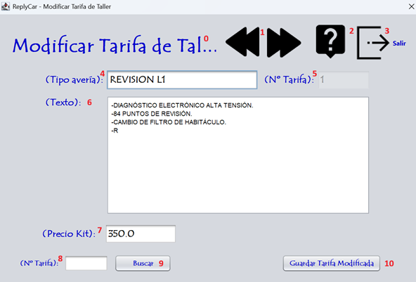

La modificación de una tarifa consiste en modificar la ficha con sus datos para poder ralizar las facturas y el seguimiento de las intervenciones. Sigue las instrucciones de la fotografía para realizar el proceso correctamente. Para realizar la modificación de una tarifa debe ingresar los datos que corresponden a la numeración expuesta en la fotografía. Vamos a proceder:

0 - Título de la pantalla, descripción de lo que significa la pantalla.
1 - Botones de dirección para buscar la tarifa a modificar.
2 - Botón para proceder a leer la ayuda de la aplicación.
3 - Botón para salir de la aplicación.
4 - Ingresa el nombre de la tarifa.
5 - Nº de id que tiene la tarifa.
6 - Texto de la reparación de la tarifa.
7 - Precio de la tarifa.
8 - Ingresa tarifa a buscar.
9 - Busca la forma de pago insertada.
10 - Guardar la nueva tarifa modificada.
Nota: Pulsando F1 en la ventana principal, se abrirá esta página de ayuda.